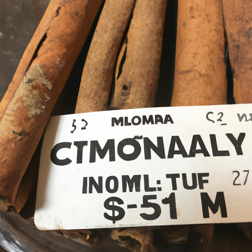

News
Online retailers for Ceylon cinnamon
Local stores selling Ceylon cinnamon
About Us
How to Easily Locate Trusted Sellers of Genuine Ceylon Cinnamon
Sep 15, 2024
In a world where the authenticity of products can often be dubious, finding genuine Ceylon cinnamon—a prized spice known for its delicate flavor and numerous health benefits—can be quite the challenge.. The market is flooded with various types of cinnamon, some of which are falsely labeled as "Ceylon" to capitalize on its esteemed reputation.
How to Find the Best Place to Buy Authentic Ceylon Cinnamon
Sep 15, 2024
Finding the best place to buy authentic Ceylon cinnamon can be a rewarding journey for anyone who appreciates the subtle nuances of this exquisite spice.. Known for its mild flavor and numerous health benefits, Ceylon cinnamon, also referred to as "true cinnamon," is distinctly different from the more common cassia variety found on most supermarket shelves.
How to Uncover Secret Spots to Purchase Premium Ceylon Cinnamon
Sep 15, 2024
Uncovering Secret Spots to Purchase Premium Ceylon Cinnamon The allure of Ceylon cinnamon, often dubbed the "true cinnamon," is undeniable.. Its delicate sweetness and subtle complexity set it apart from the more commonly found Cassia variety.
What is the Best Place to Buy Authentic Ceylon Cinnamon Online?
Sep 15, 2024
In a world where authenticity and quality are often compromised for profit, finding genuine products can be a daunting task.. This is especially true when it comes to sourcing authentic Ceylon cinnamon, a spice renowned for its numerous health benefits and unique flavor profile.
What is the Difference Between Buying Ceylon Cinnamon Locally and Online?
Sep 15, 2024
The Difference Between Buying Ceylon Cinnamon Locally and Online When it comes to sourcing culinary ingredients, particularly exotic spices like Ceylon cinnamon, both local and online shopping offer unique advantages and challenges.. While preferences may vary depending on individual needs and circumstances, understanding the differences between these two purchasing avenues can empower consumers to make more informed choices. Buying Ceylon cinnamon locally offers a tangible, sensory experience that is hard to replicate in the digital realm.

What is the Most Trusted Source for High-Quality Ceylon Cinnamon?
Sep 15, 2024
When it comes to spices, few can match the allure and historical significance of Ceylon cinnamon.. This prized spice has been cherished for centuries not just for its unique flavor and aroma but also for its numerous health benefits.
Where to Purchase Authentic Ceylon Cinnamon
Sep 15, 2024
Purchasing Authentic Ceylon Cinnamon: A Guide for Discerning Buyers In a world filled with countless spices and flavors, few can match the allure and distinctiveness of authentic Ceylon cinnamon.. Known as "true cinnamon," this spice is revered not just for its superior taste but also for its myriad health benefits.